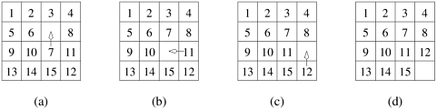

Q18.Explain 15 puzzle problem.
- The 15-puzzle has 15 numberes tiles on a square frame with total capacity of 16 tiles.
- We are given any random arrangement of tiles and our aim is to convert it into final arrangement as shown in the figure.
- We can move only the adjacent tile to the empty spot.
- The initial arrangement and final arrangement are called are called initial state and goal state respectively.
- The 15-puzzle is typically solved using tree-search techniques. Starting from the initial configuration, all possible successor configurations are generated.
- A configuration may have 2, 3, or 4 possible successor configurations, each corresponding to the occupation of the empty slot by one of its neighbors.
- The task of finding a path from initial to final configuration now translates to finding a path from one of these newly generated configurations to the final configuration.
- Since one of these newly generated configurations must be closer to the solution by one move (if a solution exists), we have made some progress towards finding the solution.
- The configuration space generated by the tree search is often referred to as a state space graph.
- Each node of the graph is a configuration and each edge of the graph connects configurations that can be reached from one another by a single move of a tile.
- One method for solving this problem in parallel is as follows.
- First, a few levels of configurations starting from the initial configuration are generated serially until the search tree has a sufficient number of leaf nodes (i.e., configurations of the 15-puzzle).
- Now each node is assigned to a task to explore further until at least one of them finds a solution.
- As soon as one of the concurrent tasks finds a solution it can inform the others to terminate their searches.
- 